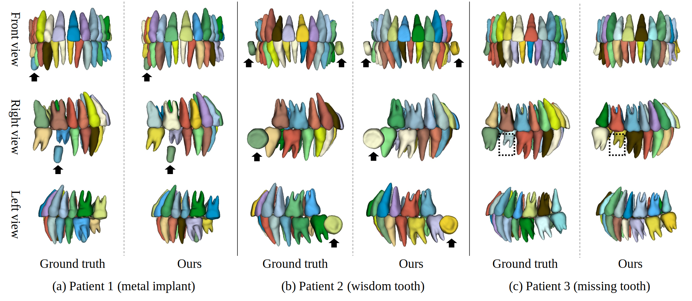

系統成果
CSWin UNETR: 牙齒區域預測

牙齒實例分割
與 2020 年陳等人 [1] 提出之方法比較
[1] Yanlin Chen, Haiyan Du, Zhaoqiang Yun, Shuo Yang, Zhenhui Dai, Liming Zhong, Qianjin Feng, and Wei Yang. 2020. Automatic Segmentation of Individual Tooth in Dental CBCT Images From Tooth Surface Map by a Multi-Task FCN. IEEE Access 8 (2020), 97296–97309. https://doi.org/10.1109/ACCESS.2020. 299179